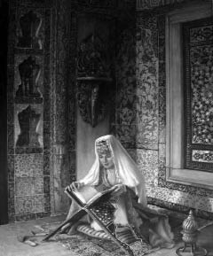

Bizim çocukluğumuzda oturduğumuz, gördüğümüz, misafirliklerinde bulunduğumuz evlerde evvela zaman taksim edilmişti; kronometre gibi işlerdi. Kalkmak, yatmak, kahvaltı etmek, yemek yemek vakitleri muayyendi.[28] Efendiler istesin, bu böyle olurdu. Sabah oldu vaktinde kahvaltı tepsisi odaya getirilir; masanın üzerine bırakılır; perdeler açılır; cam biraz açılır kapanır; yorgan biraz kaldırılarak yatak ve yatan havalandırılırdı. Akşamları da vakit geldi mi yatakların örtüleri kaldırılır; camlar, perdeler kapatılır; sürahilerin suyu değiştirilir; kış ise sobaların kapıları kapanır; mangal varsa üstleri kapatılırdı. Çocuklara yatma vakti hatırlatılır; efendiler için de nöbetle bir veya iki kişi ayakta, yani hizmette bırakılarak, üst tarafı odalarına çekilirlerdi. Hele yemek zamanı kıl kadar inhiraf etmezdi.[29] Çıngırak yahut ziller çalınırdı. Herkes beş dakika sonra sofrada bulunurdu. Gelmeyenler beklemezlerdi. Kahvelerde sofrada içilirdi. Saraylarda ve konaklarda bunlar böyle cereyan ederdi. Evlerde dahi bu zaman taksiminin hissesi vardı. Fevkalade günler, geceler tabiî olarak herkes ayaklanırsa da yemek, içmek ve çocuklar için yatmak zamanı değişmezdi denilebilir. Esasen çocuklarla büyüklerin hemdem olmaları[30] pek vâki olmaz; buna müsait çehre bulunmazdı. Sebep olarak da çocukları asabı ve sıhhati bozulur derlerdi. Terbiyeleri de bozulur zannında idiler. Belki bunu aralarında ileri geri konuşmalarına imkân bulmak için söylerler idiyse de ısrarları çocuğun sıhhati üzerinde idi. Hem tertipsiz, hem terbiyesiz yetiştirmekten korkarlardı. Gerçi bu hususlarda ifratla tefrite düşenler yok değildi. Fakat istisnalar bu usul ve teamülü[31] bozmamakta idi.
Okumak Merakı
Okumak zevki ve gururu haremde de vardı. Hanımefendiler, evdeki yaşlı kadınlar, hatta bacılar Kur’an-ı Kerim okurlardı; Delâil’i[32] okurlardı ve okuttukları kızlara namazın erkânını ve surelerini öğretir; ezberletirler; masal gibi yazılmış kitapları okurlardı. Ve sıra ile nöbetle okurlardı; ötekiler de dinlerlerdi. Sonra da aralarında bir münakaşa çıkarırlar; nasıl anladıklarını anlatmaya çalışırlardı. Hele kocakarı masallarını öğrenmek ve anlatmak merakı müsabaka halinde idi. güzel masal söyleme bir hünerdi ve aferin alırdı. Çocuklar uyutulduktan sonra daha serbest hareket olunurdu. Bazı romanlar da okunurdu. İhtiyaçların müsaadelerine mevkufen gençler de dile getirilirdi. Hülasa okunan kitap, dinlenen hikâye üzerinde mübahaseler yapılırdı. Bazı defa da bir kitap, bir kıza verilir; bir iki gün de vakit verilirdi. “Sen şunu oku, sonra da tane tane bize anlatırsın” teklifi serdedilirdi. Kâmran isimli bir kalfamızın bu işte mahareti şöhret-şiar olmuştu.[33] Gece yatısına misafir gelir; Kâmran’ı dinlerlerdi. Başka evlerde de bu gûna[34] söhret-şiar vardı.

Selamlıkta Dahi
Bazı saraylar, konaklar ve haneler mektebe benzerdi. Birçoğunda mükemmel kütüphaneler vardı. Adliye Nâzırı İsmetpaşazade Rıza, Sadrazam Ahmed Vefik, Sadrazam Edhem Paşaların emsalinin ve Hazine-i Hassa-i Şahane[35] müsteşarı Halis Efendi’nin, Meclis-i Maarif Reisi sudûr-ı i’zamdan[36] Haydar Molla’nın ve Vükela-yı Saltanat-ı Seniye’den[37] Hasan Fehmi Paşa’nın ve Çavdarlı Esad Molla Beyefendi’nin kütüphaneleri gibi. Birtakım da devrin tabir-i mahsusuyla[38] “ayaklı kütüphaneler” vardı. Bunlar her şeyi okuyan ve anlayan ve anlatan münevverlerdi. Her yerde hüsnü kabul ve hürmet görürlerdi. Affedersiniz unuttum amcam Ali Rıza Mümtaz Paşa’nın da birçok kitabı ve hüsn-i beyanı[39] vardı. Reşid Akif Paşa konağı da bir âlemdi. Âlimlerle dolardı. Saatlerce hem hararetlice mübahaseler[40] olurdu. Hele Babanzâde Mustafa Zihni Paşa’nın bulunduğu meclisler, fevkalade alakayı cazipti. Bu meclislerde bazı kere de bir eser okunurdu. Bu eser üzerinde müzakereler, mübahaseler yapılırdı. Benim gördüklerimde riyaset[41] mevkiini daima yukarıda ismi geçen Molla Esad Bey işgal ederdi. Çocukluk, gençlik bu ya, biz de onlardan bunları gördükçe okumak merakına düşer ve aklımızca aramızda konuşur; mübahaseler yapardık. Bu merakımızı bilenler bize “çömez” derlerdi. Çömez yukarı, çömez aşağı koşar dururduk! Hey gidi günler hey!
Akşam, 25 Eylül 1950